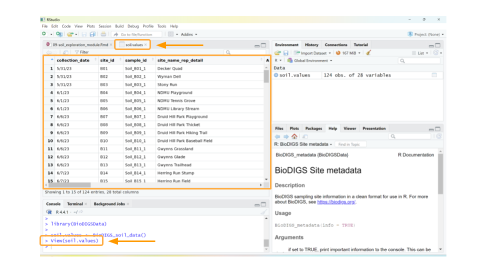

Chapter 10 Part 1. Examining the Data
We will use the BioDIGSData package to retrieve the data. We first need to install the package from where it is stored on GitHub.
Packages and libraries
You might see or hear the term “package” or “library” when working with the R programming language.
Packages are collections of R functions, data, and documentation that extend the base functionality of R. They are the fundamental units of shareable code in R. Packages are developed by the R community and made available through repositories like CRAN (Comprehensive R Archive Network), Bioconductor, and GitHub. When you install a package, you gain access to all the functions, data, and documentation provided by that package.
Libraries are the directories where packages are stored.
We also use the library command to load and attach packages to the R environment. When you load a package using library(package_name), you make the functions and objects from a package available for use in your current R session.
You may first need to install the remotes package to your RStudio environment. remotes is a package (or chunk of pre-written code) that allows you to download code that has been stored on GitHub into RStudio.
If you’re having trouble with the code above, you can also try:
install.packages("remotes")
remotes::install_url('https://github.com/fhdsl/BioDIGSData/archive/refs/tags/v1.0.0.0.tar.gz')Once you’ve installed the package, we can load the package (which just means we have access to all the data stored in the BioDIGSData package). Then we assign the soil testing data to an object. This command follows the code structure:
dataset_object_name <- stored_BioDIGS_dataset
The “dataset_object_name” is what RStudio will call the dataset after you open it. The “stored_BioDIGS_dataset” is what the dataset is called within the BioDIGSData package. Finally, the arrow (“<-”) tells R to open the “stored_BioDIGS_dataset” and save it in your environment as “dataset_object_name”.
The order of these commands might be odd to our eyes, but it makes perfect sense to RStudio!
The soil testing data is called BioDIGS_soil_data in the BioDIGSData package. When we save this dataset into our environment, we’re calling is soil.values.
It seems like the dataset loaded, but it’s always a good idea to verify. There are many ways to check, but the easiest approach (if you’re using RStudio) is to look at the Environment tab on the upper right-hand side of the screen. You should now have an object called soil.values that includes some number of observations for 28 variables. The observations refer to the number of rows in the dataset, while the variables tell you the number of columns. As long as neither the observations or variables are 0, you can be confident that your dataset loaded.

Let’s take a quick look at the dataset. We can do this by clicking on soil.values object in the Environment tab. (Note: this is equivalent to typing View(soil.values) in the R console.)
This will open a new window for us to scroll through the dataset.

Well, the data definitely loaded, but those column names aren’t immediately understandable. What could As_EPA3051 possibly mean? In addition to the dataset, we need to load the data dictionary as well.
Data dictionary: a file containing the names, definitions, and attributes about data in a database or dataset.
In this case, the data dictionary can help us make sense of what sort of values each column represents. The data dictionary for the BioDIGS soil testing data is available in the R package (see code below), but we have also reproduced it here.

- collection_date: Date sample was collected (soil was removed from a site).
- site_id: Unique letter and number site name. Check BioDIGS_metadata() for GPS coordinates, origin, and more.
- sample_id: Unique sequencing sample identifier.
- site_name_rep_detail: Detailed label for the sample, intended to help disambiguate in case of confusion.
- As_EPA3051: Arsenic (mg/kg), EPA Method 3051A. Quantities < 3.0 are not detectable.
- Cd_EPA3051: Cadmium (mg/kg), EPA Method 3051A. Quantities < 0.2 are not detectable.
- Cr_EPA3051: Chromium (mg/kg), EPA Method 3051A
- Cu_EPA3051: Copper (mg/kg), EPA Method 3051A
- Ni_EPA3051: Nickel (mg/kg), EPA Method 3051A
- Pb_EPA3051: Lead (mg/kg), EPA Method 3051A
- Zn_EPA3051: Zinc (mg/kg), EPA Method 3051A
- water_pH: Water pH
- OM_by_LOI_pct: Organic Matter by Loss on Ignition
- P_Mehlich3: Phosphorus (mg/kg), using the Mehlich 3 soil test extractant
- K_Mehlich3: Potassium (mg/kg), using the Mehlich 3 soil test extractant
- Ca_Mehlich3: Calcium (mg/kg), using the Mehlich 3 soil test extractant
- Mg_Mehlich3: Magnesium (mg/kg), using the Mehlich 3 soil test extractant
- Mn_Mehlich3: Manganese (mg/kg), using the Mehlich 3 soil test extractant
- Zn_Mehlich3: Zinc (mg/kg), using the Mehlich 3 soil test extractant
- Cu_Mehlich3: Copper (mg/kg), using the Mehlich 3 soil test extractant
- Fe_Mehlich3: Iron (mg/kg), using the Mehlich 3 soil test extractant
- B_Mehlich3: Boron (mg/kg), using the Mehlich 3 soil test extractant
- S_Mehlich3: Sulfur (mg/kg), using the Mehlich 3 soil test extractant
- Na_Mehlich3: Sodium (mg/kg), using the Mehlich 3 soil test extractant
- Al_Mehlich3: Aluminum (mg/kg), using the Mehlich 3 soil test extractant
- Est_CEC: Cation Exchange Capacity (meq/100g) at pH 7.0 (CEC)
- Base_Sat_pct: Base saturation (BS). This represents the percentage of CEC occupied by bases (Ca2+, Mg2+, K+, and Na+). The %BS increases with increasing soil pH (Figure 5). The availability of Ca2+, Mg2+, and K+ increases with increasing %BS.
- P_Sat_ratio: Phosphorus saturation ratio. This is the ratio between the amount of phosphorus present in the soil and the total capacity of that soil to retain phosphorus. The ability of phosphorus to be bound in the soil is primary a function of iron (Fe) and aluminum (Al) content in that soil.
Using the data dictionary, we find that the values in column As_EPA3051 give us the arsenic concentration in mg/kg of each soil sample, as determined by EPA Method 3051A. This method uses a combination of heat and acid to extract specific elements (like arsenic, cadmium, chromium, copper, nickel, lead, and zinc) from soil samples.
While arsenic can occur naturally in soils, higher levels suggest the soil may have been contaminated by mining, hazardous waste, or pesticide application. Arsenic is toxic to humans.
QUESTIONS:
What data is found in the column labeled “Fe_Mehlich3”? Why would we be interested how much of this is in the soil? (You may have to search the internet for this answer.)
What data is found in the column labeled “Base_Sat_pct”? What does this variable tell us about the soil?
You may notice that some cells in the soil.values table contain NA. This just means that the soil testing data for that sample isn’t available yet. We’ll take care of those values in the next part.
QUESTIONS:
How many observations are in the soil testing values dataset that you loaded? What do each of these observations refer to?
How many different soil characteristics are in the dataset? How can you tell?